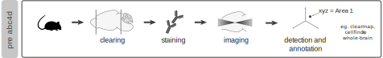

01 - Data cleaning
4/16/2021
01_cleandata.RmdPre-abc4d
You have performed your whole-brain experiment, imaged the brains, and processed the samples for cell identification and annotation. Probably something along the lines of: 
Have you used clearmap or cellfinder? Ultimately you reached a matrix where each row is one cell, and each column represents: - xyz coordinates, one column for each - id, indicating the Allen Brain Reference Atlas (ABA) area that the cell belongs to - manimum intensity, of the cell (not yet available in cellfinder).
Save this matrix for each sample as a .npy file. For a clearmap example, see this repository. Alternatively, download our sample data on our osf page.
Environment preparation
First, let’s make sure that we have all our environment properly set.
# To clean your environment, run
rm(list = ls())
# get your libraries
library(tidyverse) # for general data handling
library(abc3d) # for the analyses
library(RcppCNPy) # access numpy files in RYou can place this at the beginning of your script. Normally, I save this in a utils.R file in my src directory (“src/utils.R”). You can then source this file in at the beginning of your script.
Then, I set my paths. These are folders where I save my data and resources
data_raw <- "data/for_package/raw/"
data_temp <- "data/for_package/temp/"
data_final <- "data/for_package/final/"
resources <- "data/for_package/resources/"Normally, I place this in a “config/config.R” file, but feel free to simply place it in just one single file. Make sure that the folders you refer to actually exist!
Migrating data from other tools
chances are that the tool that you used for cell detection and alignment was in python. Next, lets have a look at one of our samples
# get the names of the npy files
my_npy <- list.files(data_raw)
# import npy of specified sample
sample_file <- paste0(data_raw, my_npy[[1]])
# load .npy as a dataframe
raw_counts <- as.data.frame(RcppCNPy::npyLoad(sample_file))
# rename columns:
# column order/presence depends on the software used for annotation / alignment
colnames(raw_counts) <- c('xPos', 'yPos', 'zPos', 'minInt',
'meanInt', 'maxInt', 'id')
# let's have a look at the data.frame
head(raw_counts)Preparing resources
The abc4d package provides the function clean_counts() for the data cleaning step of the analysis.

clean_counts() processes one sample (data.frame) at the time. It saves the cleaned cells and a summary of the removed cells in specified folders (path_cleaned and path_removed, respectively). clean_counts() requires resources (see vignette). These were prepared in advance, and are available as .csv files here (https://osf.io/j2sxf/).
# file with all samples and group they belong to
conditions <- read.csv(paste0(resources, "conditions.csv")) # file with all samples
# tree structure of the ABA categorization, with a variable (my_grouping) with the wanted spatial resolution - see vignette
areas <- read.csv(paste0(resources, 'areas.csv'))
# if you do not want the smallest categorization of the aba atlas, you can simply:
# areas <- data("atlas_tree") # this comes from the ABA atlas
# areas$my_grouping <- areas$acronym
# damaged brain areas
damaged_ba <- read.csv(paste0(resources, "damaged_ba.csv"))
# cells with abnormally high values > here it's empty
dodgy_cells <- read.csv(paste0(resources, "dodgy_cells.csv"))
# masks for artefacts - available within the package.
mask <- data("mask")
halo_correction <- mask[["halo"]]
ventricle_correction <- mask[["ventricle"]]Of note, if you want to create your own mask, see example script here.
Cleaning one sample
Now, we can clean the first sample.
i <- my_npy[[1]]
# Import npy of specified sample
sample_file <- paste0(data_raw, i)
# get sample name as saved in the sample_id vars
sample <- i %>%
str_remove_all(".npy") %>%
str_remove_all("sample_")
# prepare dataframe
raw_counts <- as.data.frame(RcppCNPy::npyLoad(sample_file))
colnames(raw_counts) <- c('xPos', 'yPos', 'zPos', 'minInt',
'meanInt', 'maxInt', 'id')
# Clean one sample
clean_cells <- clean_counts(sample_id = sample, data = raw_counts,
atlas = areas, damaged_areas = damaged_ba,
dodgy_cells = NULL,
out_mask = halo_correction, vent_mask = ventricle_correction,
path_cleaned = data_temp,
path_removed = data_temp)Check that two files were saved in the specified folders. In this example, two files should be saved in data/temp/.
Cleaning all samples
Now for all samples.
for (i in my_npy) {
# Import npy of specified sample
sample_file <- paste0(data_raw, i)
# get sample name as saved in the sample_id vars
sample <- i %>%
str_remove_all(".npy") %>%
str_remove_all("sample_")
# prepare dataframe
raw_counts <- as.data.frame(RcppCNPy::npyLoad(sample_file))
colnames(raw_counts) <- c('xPos', 'yPos', 'zPos', 'minInt',
'meanInt', 'maxInt', 'id')
# Clean one sample
clean_cells <- clean_counts(sample_id = sample, data = raw_counts,
atlas = areas, damaged_areas = damaged_ba,
dodgy_cells = NULL,
out_mask = halo_correction, vent_mask = ventricle_correction,
path_cleaned = data_temp,
path_removed = data_temp)
}Two files for each sample have been saved in the specified folder.
Get the final dataframe
Now, we can merge all cleaned samples in one single file. To do this, we can use the abc4d function samples_files_to_df. Here, you simply need to specify the folder where the cleaned samples are, and the function will merge them in a single dataframe.
all_cells <- samples_files_to_df(data_temp)
# save output
saveRDS(all_cells, paste(data_final,"example.RDS"))If you run the tutorial with the provided data, all_cells is equivalent to data(“example”) from the abc4d package.